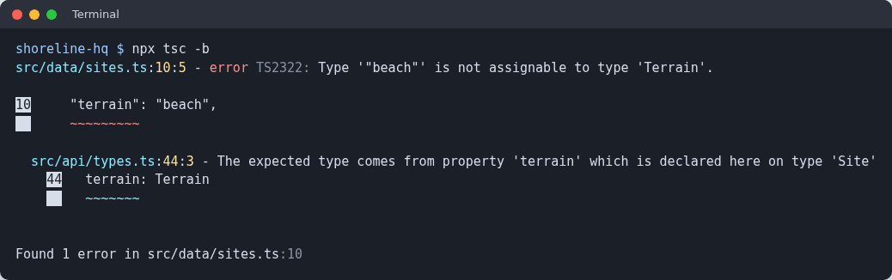
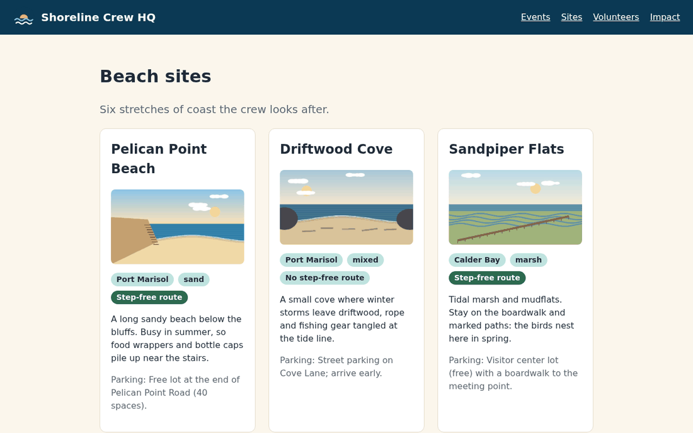
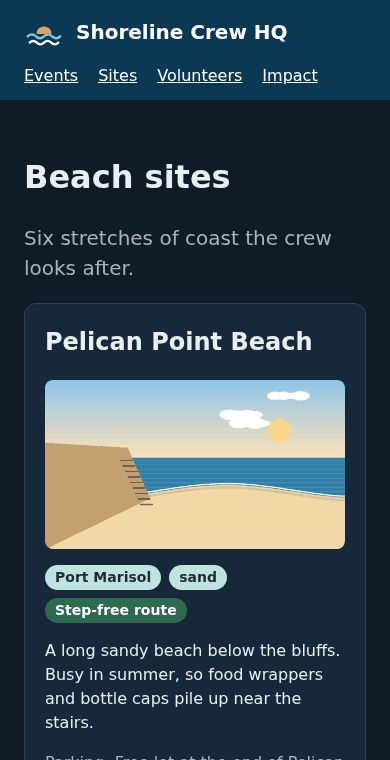

📦 Lesson 3.2: Props, Children and Composition
Yesterday's components always drew the same thing. Today they take inputs. You will hand data to components through props, describe those props with TypeScript so every use is checked, let a component wrap whatever you put inside it, and build bigger pieces out of small ones. By the end, Shoreline Crew HQ has its first screen made from real data: the six beach sites the crew looks after, each on its own card with a picture, badges and directions.
🎯 Learning Objectives
By the end of this lesson, you will be able to:
- Explain props as the single object React passes to a component, and destructure it in the parameter list
- Type props with an interface, and read the errors TypeScript gives for missing, misspelled and mistyped props
- Make props optional with
?and give them defaults, the same way you did for options objects in Lesson 2.3 - Accept content between a component's tags with
children: ReactNode, and choose composition over a long list of props - Reuse the API's domain types in props, including a part of a type such as
Site['image'] - Build the HQ's sites page from a typed
Site[]withCard,Badge,SitePictureandSiteCard, and giveAppLayoutitschildren
📦 Code for this lesson
Starting code: lesson-08-start.zip · Finished code: lesson-08-end.zip. Each folder has a README with the commands to run it. Copy .env.example to .env.local in shoreline-hq before npm run dev.
In This Lesson
📦 Props: a Component's Options Object
A component that can only say one thing is a sign, not a tool. The HQ needs one card component that can show Pelican Point Beach, Driftwood Cove or any other site, depending on what it is given. If a component is a function, props (short for properties) are its arguments: the values a parent hands to a child so the child can draw something different each time.
You already know the shape props take. In Lesson 2.3 you wrote eventLine with an options object, destructured right in the parameter list:
interface LineOptions {
showStatus?: boolean
prefix?: string
}
function eventLine(
event: CleanupEvent,
{ showStatus = false, prefix = '-' }: LineOptions = {},
): string {A component's props are exactly that: one object, destructured in the parameter list, described by an interface. Create src/Scratch.tsx in shoreline-hq again (your experiment file for this lesson, deleted at the end) and try this:
interface SiteNameProps {
name: string
town: string
}
function SiteName({ name, town }: SiteNameProps) {
return (
<strong>
{name}, {town}
</strong>
)
}
export function NextCleanup() {
return (
<p>
Next cleanup: <SiteName name="Driftwood Cove" town="Port Marisol" />
</p>
)
}npx tsc -b is silent. Read it from the bottom up: <SiteName name="Driftwood Cove" town="Port Marisol" /> passes two attributes. React collects every attribute into one object, { name: 'Driftwood Cove', town: 'Port Marisol' }, and calls SiteName with it. The parameter { name, town }: SiteNameProps unpacks the object and says what it must contain. Here is what the compiler makes of a component with props (the same tsc emit you looked at in Lesson 3.1):
import { jsx as _jsx, jsxs as _jsxs } from "react/jsx-runtime";
export function NextCleanup() {
return _jsx(SiteName, { name: "Driftwood Cove", town: "Port Marisol" });
}
function SiteName({ name, town }) {
return _jsxs("strong", { children: [name, ", ", town] });
}The attributes became a plain object, { name: "Driftwood Cove", town: "Port Marisol" }, the second argument to _jsx. React later calls SiteName with that object. Nothing magic: a function, called with an options object.
💡 Mental model: the meeting point
Every cleanup has a meeting point, where the organizer hands each team its kit: a bag, gloves, a map of their stretch of beach. The team does not go back to the van to get more; it works with what it was handed. Props are that handoff. The parent decides what each child gets, the child uses it and never changes it, and the data always travels the same way: down, from parent to child.
Strings in quotes, everything else in braces
An attribute's value in quotes is a string: town="Port Marisol". Any other value goes in braces, as in Lesson 3.1: a number capacity={18}, a boolean accessible={true}, an object site={site}, even other TSX icon={<span>⭐</span>}. Braces around a string also work (town={'Port Marisol'}), and you need them when the string is computed (label={`${count} spots`}).
🔷 Typing Props
The interface is a contract between the component and every place that uses it. TypeScript checks each use the way it checks each call to a function. Add three wrong uses under the right one:
export function NextCleanup() {
return (
<p>
Next cleanup: <SiteName name="Driftwood Cove" town="Port Marisol" />
<SiteName name="North Jetty" />
<SiteName name="Otter Creek Mouth" twon="Seal Rock" />
<SiteName name={42} town="Calder Bay" />
</p>
)
}Expected output (npx tsc -b)
src/Scratch.tsx:18:8 - error TS2741: Property 'town' is missing in type '{ name: string; }' but required in type 'SiteNameProps'.
18 <SiteName name="North Jetty" />
~~~~~~~~
src/Scratch.tsx:3:3 - 'town' is declared here.
3 town: string
~~~~
src/Scratch.tsx:19:42 - error TS2322: Type '{ name: string; twon: string; }' is not assignable to type 'IntrinsicAttributes & SiteNameProps'.
Property 'twon' does not exist on type 'IntrinsicAttributes & SiteNameProps'.
19 <SiteName name="Otter Creek Mouth" twon="Seal Rock" />
~~~~
src/Scratch.tsx:20:17 - error TS2322: Type 'number' is not assignable to type 'string'.
20 <SiteName name={42} town="Calder Bay" />
~~~~
src/Scratch.tsx:2:3 - The expected type comes from property 'name' which is declared here on type 'IntrinsicAttributes & SiteNameProps'
2 name: string
~~~~
Found 3 errors in the same file, starting at: src/Scratch.tsx:18Three errors, three kinds of mistake, and you know two of them from Module 2:
- TS2741, a missing prop. The props object you wrote,
{ name: string; }, lackstown, whichSiteNamePropsrequires. The follow-up line points at the interface, so you can see the rule you broke. - TS2322 with "does not exist", an unknown prop.
twonis not in the interface. The type it checks against,IntrinsicAttributes & SiteNameProps, is "React's own props (likekey) plus yours", theIntrinsicAttributesyou met in Lesson 3.1. - TS2322 with "the expected type comes from", a wrong type.
{42}is a number;namemust be a string.
In plain JavaScript, all three would reach the browser as an empty town, a missing town and a "42" where a name should be, with no error at all. Here they are red underlines while you type, and VS Code's completions list the props a component accepts as soon as you type a space after its name.
Reuse the domain types
Most HQ components show something the API already describes. Lesson 2.4 copied those descriptions into src/api/types.ts, so a component that shows a site does not invent its own shape; it asks for a Site:
import type { Site } from '../api/types.ts'
interface SiteCardProps {
site: Site
}Sometimes a component needs only part of a type. The picture on a site card needs the image object, not the whole site. TypeScript can name the type of one property with an indexed access type: Site['image'] reads "the type of the image property of Site". It looks like reading a property, but it happens at the type level, with the property name in quotes:
import type { Site } from './api/types.ts'
type SiteImage = Site['image']
type SiteTerrain = Site['terrain']
export const cover: SiteImage = {
url: 'http://localhost:4000/images/sites/north-jetty.jpg',
alt: 'A long jetty of gray boulders reaching into the sea.',
width: 1200,
height: 675,
}
export const ground: SiteTerrain = 'rocky'Hover over SiteImage in VS Code and you see { url: string; alt: string; width: number; height: number; }, the object written inside Site. When the API's type changes, every component using Site['image'] changes with it. Name a property that does not exist and TypeScript says so:
Expected output (npx tsc -b, with Site['picture'])
src/Scratch.tsx:3:23 - error TS2339: Property 'picture' does not exist on type 'Site'.
3 type SiteImage = Site['picture']
~~~~~~~~~
Found 1 error in src/Scratch.tsx:3Lesson 2.4's utility types work in props too: Pick<Volunteer, 'name' | 'phone'> asks for just those two properties, which lets you use a component with a small object made by hand as well as with a full Volunteer (Exercise 1 does exactly that).
🎚️ Optional Props and Defaults
Some props have a sensible value most of the time. Mark them optional with ? and give them a default in the destructuring, the same two tools as Lesson 2.3's LineOptions:
interface TideTimeProps {
time: string
label?: string
highlight?: boolean
}
function TideTime({ time, label = 'Low tide', highlight = false }: TideTimeProps) {
return (
<p className={highlight ? 'tide tide-highlight' : 'tide'}>
{label.toUpperCase()}: {time}
</p>
)
}
export function TideBoard() {
return (
<>
<TideTime time="06:40" />
<TideTime time="12:55" label="High tide" />
<TideTime time="19:10" highlight />
</>
)
}label?: stringmeans callers may leave it out.label = 'Low tide'fills it in when they do, so inside the componentlabelis a plainstring: hover over it and see.- A boolean prop written without a value is
true:<TideTime time="19:10" highlight />is short forhighlight={true}. Leaving it out gives the default,false. - Unlike
eventLine, there is no= {}after the props type. React always passes an object, even an empty one, so the props themselves can never be missing.
Take the default away ({ time, label, highlight = false }) and TypeScript reminds you what "optional" means:
Expected output (npx tsc -b)
src/Scratch.tsx:10:8 - error TS18048: 'label' is possibly 'undefined'.
10 {label.toUpperCase()}: {time}
~~~~~
Found 1 error in src/Scratch.tsx:10An optional prop is string | undefined inside the component (Lesson 2.2), so calling a string method on it needs a default, a ?? or a check first. A default is usually the clearest.
Props are read-only
A team at the meeting point does not repaint the map it was handed. A component must not change its props either: they belong to the parent, and changing them breaks the "same inputs, same output" purity rule from Lesson 3.1. TypeScript does not stop you here (the props object is not marked readonly), but the linter does:
import type { Site } from './api/types.ts'
export function SiteTitle({ site }: { site: Site }) {
site.name = site.name.toUpperCase()
return <h2>{site.name}</h2>
}Expected output (npm run lint)
> shoreline-hq@0.0.0 lint
> oxlint
⚠ react(immutability): This value cannot be modified
╭─[src/Scratch.tsx:4:3]
3 │ export function SiteTitle({ site }: { site: Site }) {
4 │ site.name = site.name.toUpperCase()
· ──┬─
· ╰── value cannot be modified
5 │ return <h2>{site.name}</h2>
╰────
help: Do not mutate component props or hook arguments. If the value should change, update it where it is owned and pass an update callback, or use local state
note: React Compiler skipped optimizing this component or hook. Additional guidance: https://react.dev/reference/eslint-plugin-react-hooks/lints/immutability
Found 1 warning and 0 errors.
Finished in 9ms on 17 files with 116 rules using 20 threads.The help line says what to do instead: work out a new value (<h2>{site.name.toUpperCase()}</h2>) rather than changing the old one, or, when the value really must change over time, keep it in state where it is owned. State arrives in Lesson 3.4.
🪣 Children and Composition
HTML elements can hold content: <section> holds whatever you put between its tags. Your components can too. Whatever sits between <Panel> and </Panel> arrives as a prop called children:
import type { ReactNode } from 'react'
interface PanelProps {
title: string
children: ReactNode
}
function Panel({ title, children }: PanelProps) {
return (
<section>
<h2>{title}</h2>
{children}
</section>
)
}
export function BeforeYouCome() {
return (
<Panel title="Before you come">
<p>Bring water, a hat and closed shoes.</p>
<p>
Gloves and bags are on us. Questions? Ask <strong>Maya</strong>.
</p>
</Panel>
)
}Panel draws the frame (a section with a heading) and puts {children} where the content belongs. It does not know or care that the content is two paragraphs with a <strong> inside; it could be a picture, a list or another component. The type that says "anything React can draw" is ReactNode, imported with import type from react. Here is its declaration in React's types (node_modules/@types/react/index.d.ts):
type ReactNode =
| ReactElement
| string
| number
| bigint
| Iterable<ReactNode>
| ReactPortal
| boolean
| null
| undefined
| DO_NOT_USE_OR_YOU_WILL_BE_FIRED_EXPERIMENTAL_REACT_NODES[
keyof DO_NOT_USE_OR_YOU_WILL_BE_FIRED_EXPERIMENTAL_REACT_NODES
]
| Promise<AwaitedReactNode>;Elements, strings, numbers, iterables (so arrays) of nodes, and the values that draw nothing (boolean, null, undefined), plus two entries for newer React features you can ignore for now. That is the list from Lesson 3.1's "what can React draw?", written as a union type.
A component that does not declare children does not accept any. Put content inside one, and TypeScript tells you it has nowhere to go:
interface NoteProps {
title: string
}
function Note({ title }: NoteProps) {
return <h2>{title}</h2>
}
export function BeforeYouCome() {
return (
<Note title="Before you come">
<p>Bring water, a hat and closed shoes.</p>
</Note>
)
}Expected output (npx tsc -b)
src/Scratch.tsx:11:6 - error TS2322: Type '{ title: string; children: Element; }' is not assignable to type 'IntrinsicAttributes & NoteProps'.
Property 'children' does not exist on type 'IntrinsicAttributes & NoteProps'.
11 <Note title="Before you come">
~~~~
Found 1 error in src/Scratch.tsx:11Read the first line: the props TypeScript received were { title: string; children: Element; }. The content between the tags became a children prop, and NoteProps has no such property. Without TypeScript, React would simply ignore the paragraph, and you would wonder where it went.
Composition over configuration
Imagine the site card designed the other way, with a prop for every possible piece:
// One component that tries to cover every case with a prop of its own
export interface EverythingCardProps {
title: string
imageUrl?: string
imageAlt?: string
badgeLabels?: string[]
showParking?: boolean
parkingText?: string
footerLinkText?: string
footerLinkHref?: string
}Every new need adds a prop: a badge color, a second link, a picture caption. Soon the component has twenty props and a tangle of ifs, and it still cannot show the one thing a new page needs. Composition turns this around: small components with one job each, combined by putting one inside another. A Card supplies the frame; a page decides what goes in it. The site card becomes a Card holding a SitePicture, some Badges and two paragraphs, and the home page can use the same Card for a sentence and a link. It is how React itself is meant to be used, and the libraries you will meet later (React Router's layouts, TanStack Query's providers) are built the same way.
💡 Why this matters
On a team, components are the API other developers use every day. A component whose props are typed, few and well named is one that teammates can use correctly from the editor's completions alone, without reading its code. A component that takes children is one they can use in places you never imagined. That is the difference between a component library people love and one they work around.
🧭 Designing a Component's Props
A component's props are its public face. A few habits keep them easy to use:
| Habit | In the HQ |
|---|---|
| A component that shows one thing from the API takes that thing, typed with the API's type | SiteCard takes site: Site |
| A general-purpose component takes plain values, so any page can use it | Badge takes label: string, not a site |
| A component that only needs part of a type asks for that part | SitePicture takes image: Site['image'] |
Content goes in children, not in a growing list of props | Card takes title and children |
| Variants are a union of words with a default, not several booleans | tone?: 'info' | 'success', default 'info' |
| Required stays required: only make a prop optional when there is a sensible default | title is required on Card |
Props can also be functions, the way a parent hears back from a child (a button that reports a click). Their types are the function types from Lesson 2.3, such as onSelect: (siteId: string) => void. You will write them in Lesson 3.4, together with state.
⚠️ Common Mistakes
⚠️ Forgetting the braces around the props
Props are one object. Writing the parameter as if each prop were its own argument compiles inside the component, and fails where it is used:
function SiteName(name: string) {
return <strong>{name}</strong>
}
export function NextCleanup() {
return <SiteName name="Driftwood Cove" />
}Expected output (npx tsc -b)
src/Scratch.tsx:6:11 - error TS2322: Type '{ name: string; }' is not assignable to type 'string'.
6 return <SiteName name="Driftwood Cove" />
~~~~~~~~
Found 1 error in src/Scratch.tsx:6The message says it plainly: React will pass { name: string; }, an object, but the function expects a string. Destructure: function SiteName({ name }: { name: string }).
⚠️ Declaring children and not drawing it
A layout that takes children but never puts {children} in its TSX shows an empty space where the page should be. In the HQ, noUnusedParameters catches it (you will see it in Step 7), but only because the destructured children goes unused; if you also used it somewhere else, nothing would warn you. Check the page in the browser, not only the terminal.
⚠️ Changing a prop to "fix it up"
site.name = ... or props.items.push(...) inside a component changes the parent's data behind its back. oxlint flags it as react(immutability); work out a new value instead.
⚠️ Making every prop optional "to be flexible"
A component with all-optional props accepts <SiteCard /> and then draws nothing useful, and TypeScript can no longer tell you that a caller forgot something important. Required props are free documentation and free checks; keep them required.
🛠️ Project: The Beach Sites Page
Organizers plan every cleanup around a site: where to park, whether there is a step-free route for volunteers who need one, what kind of debris to expect. Today the HQ gets its first screen made from data: Beach sites, six cards built from the same Site type the API uses. On the way, AppLayout learns to hold any page. When you are done, the tree for the sites page looks like this:
Start both servers (node server.ts in shoreline-api, npm run dev in shoreline-hq) and keep http://localhost:5173 open. Delete src/Scratch.tsx if you still have it. The API needs to stay running today: the site pictures are served by it.
Step 1: AppLayout holds any page (8 min)
In Lesson 3.1, AppLayout always drew HomePage. Give it a children prop instead. Replace src/components/AppLayout.tsx:
import type { ReactNode } from 'react'
import { Footer } from './Footer.tsx'
import { Header } from './Header.tsx'
interface AppLayoutProps {
children: ReactNode
}
export function AppLayout({ children }: AppLayoutProps) {
return (
<>
<a className="skip-link" href="#main">
Skip to main content
</a>
<Header />
<main id="main" className="page">
{children}
</main>
<Footer />
</>
)
}The HomePage import is gone; <main> now draws {children}, whatever that turns out to be. Save, and the page loses its content: TypeScript and VS Code underline <AppLayout /> in App.tsx, because a required prop is missing. The layout no longer decides the page; its parent does. Change src/App.tsx to pass the page between the tags:
import { AppLayout } from './components/AppLayout.tsx'
import { HomePage } from './pages/HomePage.tsx'
export function App() {
return (
<AppLayout>
<HomePage />
</AppLayout>
)
}The home page is back, and AppLayout is ready for every page the HQ will have. (You will change App.tsx once more in Step 6.)
Step 2: The sites as typed data (10 min)
Until Lesson 4.1 fetches data from the API while the app runs, the sites page uses a copy of the API's answer. Open http://localhost:4000/api/sites in your browser: six sites as JSON. Make a data folder in src (mkdir src/data, the same in PowerShell) and create src/data/sites.ts with the two lines of header below, then export const sites: Site[] = followed by the JSON: select all of it in the browser (Ctrl+A, or ⌘ Cmd+A on a Mac), copy, and paste it after the =. Whether your copy arrives on one long line or spread over many does not matter to TypeScript. (Firefox shows JSON in a viewer: open its Raw Data tab and use Copy. If anything other than the JSON comes along, such as a "Pretty-print" label, delete it.) The start and end of the file:
import type { Site } from '../api/types.ts'
// The six beach sites, copied from GET /api/sites (Lesson 3.2).
// Lesson 4.1 fetches them from the API instead, and this file goes away.
export const sites: Site[] = [
{
"id": "pelican-point",
"name": "Pelican Point Beach",
"town": "Port Marisol",
"terrain": "sand",
"accessible": true,
"latitude": 36.9512,
"longitude": -122.0461,
"parking": "Free lot at the end of Pelican Point Road (40 spaces).",
"description": "A long sandy beach below the bluffs. Busy in summer, so food wrappers and bottle caps pile up near the stairs.",
"image": {
"url": "http://localhost:4000/images/sites/pelican-point.jpg",
"alt": "A wide sandy beach below tall bluffs, with a wooden staircase down the cliff and calm blue water.",
"width": 1200,
"height": 675
}
},
// ...
]- JSON is valid TypeScript: an array of objects with quoted property names. The annotation
: Site[]makes TypeScript check every one of the six objects against the API's type, all 10 properties each, including the nestedimage. NoPickneeded: the data is complete. - The picture URLs point at
http://localhost:4000, because that is what the API answered. They work while shoreline-api runs, which is how you will work all course. - The comment tells the next reader (and you, in a month) that this file is temporary. In Lesson 4.1 the data comes from the API while the app runs, and the file is deleted.
See the check at work: change the first site's "terrain": "sand" to "terrain": "beach" and run npx tsc -b.

"beach" is not one of the four Terrain words, and the second location shows where the rule comes from, the API's own types.ts.Pasted data gets no special treatment: "beach" is not one of the four Terrain words from Lesson 2.2, and the second location shows where the rule comes from. Put "sand" back.
Step 3: Card, and today's styles (12 min)
The frame that every card in the HQ will share. Create src/components/Card.tsx:
import type { ReactNode } from 'react'
interface CardProps {
title: string
children: ReactNode
}
export function Card({ title, children }: CardProps) {
return (
<section className="card">
<h2>{title}</h2>
{children}
</section>
)
}Each card is a <section> that starts with a heading, so screen-reader users can jump from card to card by heading. Both props are required: a card without a title or without content is a mistake TypeScript should catch.
Now the styles for everything today builds. In src/index.css, add two brand colors and two role colors for cards to the :root block (change these lines):
--sand: #fbf6ec;
+ --seafoam: #bfe3df;
+ --kelp: #2d6a4f;
--ink: #1f2a37;
--muted: #5b6573;
--white: #ffffff;
/* What the page uses: these change in dark mode */
--page: var(--sand);
--text: var(--ink);
--text-muted: var(--muted);
--link: var(--sea-teal);
+ --surface: var(--white);
+ --border: #e4dccb;and give the card colors their dark-mode values (change these lines):
--link: #7cc6d6;
+ --surface: #16283a;
+ --border: #2b4257;
}Then add these rules at the end of the file:
/* Cards, badges and the sites grid (Lesson 3.2) */
.card {
padding: 1.25rem;
border: 1px solid var(--border);
border-radius: 0.75rem;
background: var(--surface);
}
.card h2 {
margin-top: 0;
}
.card-grid {
display: grid;
grid-template-columns: repeat(auto-fill, minmax(16rem, 1fr));
gap: 1.5rem;
}
.site-picture {
display: block;
width: 100%;
height: auto;
border-radius: 0.5rem;
}
.badges {
display: flex;
flex-wrap: wrap;
gap: 0.5rem;
}
.badge {
padding: 0.125rem 0.625rem;
border-radius: 999px;
font-size: 0.875rem;
font-weight: 600;
}
.badge-info {
background: var(--seafoam);
color: var(--ink);
}
.badge-success {
background: var(--kelp);
color: var(--white);
}
.muted {
color: var(--text-muted);
}Seafoam and Kelp are the brand's badge colors: Ink text on Seafoam and white text on Kelp both pass the 4.5 to 1 contrast check, in light and dark mode, because the badges set both their background and their text color. .card-grid fits as many 16rem columns as the screen allows: three on a laptop, one on a phone. In Lesson 3.6 these rules move into CSS Modules next to each component.
Finally, use the card on the home page. Replace src/pages/HomePage.tsx:
import { Card } from '../components/Card.tsx'
const crewName = 'Shoreline Crew'
const tagline = 'Many hands, cleaner sands.'
const towns = ['Port Marisol', 'Calder Bay', 'Seal Rock']
export function HomePage() {
return (
<>
<h1>{crewName} HQ</h1>
<p className="lead">{tagline}</p>
<p>
Plan cleanups, sign up volunteers and count what comes off the beaches of{' '}
{towns.join(', ')}. The first real screens arrive over the next lessons.
</p>
<Card title="Our beach sites">
<p>Six stretches of coast, from sandy beaches to a tidal marsh.</p>
<a href="/sites">See all six sites</a>
</Card>
</>
)
}A sentence and a link as the card's children. The link goes to /sites, the page you are about to build.

Card on the home page, holding a sentence and a link instead of a site. That is composition: the card supplies the frame, the page supplies what goes in it.Step 4: Badge, with an optional tone (6 min)
Small rounded labels for the town, the terrain and the step-free route. Create src/components/Badge.tsx:
interface BadgeProps {
label: string
tone?: 'info' | 'success'
}
export function Badge({ label, tone = 'info' }: BadgeProps) {
return <span className={`badge badge-${tone}`}>{label}</span>
}toneis a union of two words (Lesson 2.2), optional, with the default'info'. Inside the component its type is'info' | 'success', so the template literal can only ever producebadge-infoorbadge-success, the two classes the CSS defines.- No
children: a badge shows one short label, so alabelstring is the honest API. TypeScript will refuse<Badge>...</Badge>, which keeps badges short. - No
importline at all: the props are plain strings, and TSX needs no React import (Lesson 3.1).
Step 5: SitePicture and SiteCard (12 min)
The picture first. Create src/components/SitePicture.tsx:
import type { Site } from '../api/types.ts'
interface SitePictureProps {
image: Site['image']
}
export function SitePicture({ image }: SitePictureProps) {
return (
<img
className="site-picture"
src={image.url}
alt={image.alt}
width={image.width}
height={image.height}
loading="lazy"
/>
)
}image: Site['image']asks for just the picture object. Event pages in later lessons can show a site's picture without handing over the whole site.- The alt text comes from the data: the API describes each illustration ("A wide sandy beach below tall bluffs..."), because these pictures carry information, unlike the decorative logo.
widthandheightlet the browser reserve the space before the file arrives; the CSS then scales the picture to the card.loading="lazy"waits to download pictures until they are about to scroll into view. - Writing a JSX element over several lines, one attribute per line, is normal when there are many attributes.
Now the card that puts it together. Create src/components/SiteCard.tsx:
import type { Site } from '../api/types.ts'
import { Badge } from './Badge.tsx'
import { Card } from './Card.tsx'
import { SitePicture } from './SitePicture.tsx'
interface SiteCardProps {
site: Site
}
export function SiteCard({ site }: SiteCardProps) {
return (
<Card title={site.name}>
<SitePicture image={site.image} />
<p className="badges">
<Badge label={site.town} />
<Badge label={site.terrain} />
<Badge
label={site.accessible ? 'Step-free route' : 'No step-free route'}
tone={site.accessible ? 'success' : 'info'}
/>
</p>
<p>{site.description}</p>
<p className="muted">Parking: {site.parking}</p>
</Card>
)
}This is composition in one screen of code. SiteCard knows about sites; Card, Badge and SitePicture do not. SiteCard passes site.name as the card's title and everything between <Card> and </Card> as its children. The step-free badge picks its label and its tone with the ? : operator from Lesson 3.1: green for "Step-free route", the default color otherwise. site.terrain shows the API's word as it is (Lesson 3.3 gives every value a friendlier label with a lookup table).
Step 6: SitesPage, and a way to reach it (10 min)
Create src/pages/SitesPage.tsx:
import { SiteCard } from '../components/SiteCard.tsx'
import { sites } from '../data/sites.ts'
export function SitesPage() {
return (
<>
<h1>Beach sites</h1>
<p className="lead">Six stretches of coast the crew looks after.</p>
<div className="card-grid">
{sites.map((site) => (
<SiteCard key={site.id} site={site} />
))}
</div>
</>
)
}sites.map(...) turns the array of six sites into an array of six SiteCard elements, and React draws an array by drawing each item (Lesson 3.1). TypeScript infers that site is a Site, because sites is a Site[], so site={site} matches SiteCardProps without a single annotation. key is one of React's own props, the IntrinsicAttributes again: it gives each card in the list a stable name, and it never reaches your component. Lesson 3.3 is all about lists and keys; if you leave key out, npm run lint warns Missing "key" prop for element in iterator.
How do you get to the page? The header's Sites link loads /sites, but the app shows the home page for every address until React Router arrives in Lesson 6.1. Until then, a small temporary trick in src/App.tsx is enough. Replace the file:
import { AppLayout } from './components/AppLayout.tsx'
import { HomePage } from './pages/HomePage.tsx'
import { SitesPage } from './pages/SitesPage.tsx'
// Temporary, until React Router arrives in Lesson 6.1: the header's links load the whole
// page again, so reading the address once, when the app starts, is enough to pick a page.
const path = window.location.pathname
export function App() {
return <AppLayout>{path === '/sites' ? <SitesPage /> : <HomePage />}</AppLayout>
}The header's links are ordinary links, so clicking one loads the whole app again at the new address. Reading window.location.pathname once, when the file loads, is therefore enough, and it keeps App pure the same way the footer's year did in Lesson 3.1. The ? : picks which page goes into AppLayout's children. Click Sites (or the home card's link):

SiteCards from one typed Site[]. Each card is a Card holding a SitePicture, three Badges and two paragraphs as its children; the green badge is the success tone.Step 7: Check it everywhere, and break it (8 min)
Make the window narrow or use the device toolbar, and switch to dark mode (both as in Lesson 3.1). Tab through the page: the skip link, the header links, then the home card's link on /.

--surface and --border colors switch with the theme.Then break it once each, running npx tsc -b and undoing each change:
- In
SiteCard.tsx, change<SitePicture image={site.image} />to<SitePicture />. - In
AppLayout.tsx, delete the line{children}.
Expected output (1: the image prop missing)
src/components/SiteCard.tsx:13:8 - error TS2741: Property 'image' is missing in type '{}' but required in type 'SitePictureProps'.
13 <SitePicture />
~~~~~~~~~~~
src/components/SitePicture.tsx:4:3 - 'image' is declared here.
4 image: Site['image']
~~~~~
Found 1 error in src/components/SiteCard.tsx:13Expected output (2: children never drawn)
src/components/AppLayout.tsx:9:29 - error TS6133: 'children' is declared but its value is never read.
9 export function AppLayout({ children }: AppLayoutProps) {
~~~~~~~~
Found 1 error in src/components/AppLayout.tsx:9The first is TS2741 with the rule's location, as in the teaching section. The second is the unused-parameter check from Lesson 1.2 doing a job you might not expect: catching a layout that would have shown an empty page. Undo both, then run the full check:
npx tsc -b
npm run lint
npm run buildExpected output (npm run build)
> shoreline-hq@0.0.0 build
> tsc -b && vite build
vite v8.3.8 building client environment for production...
✓ 28 modules transformed.
computing gzip size...
dist/index.html 0.46 kB │ gzip: 0.30 kB
dist/assets/index-BLKdQNMo.css 2.13 kB │ gzip: 0.91 kB
dist/assets/index-HTYCH0hu.js 227.49 kB │ gzip: 71.50 kB
✓ built in 104ms28 modules instead of 22: five new components and the data file. (Times, sizes and hashes will differ.) npm run lint should end with "Found 0 warnings and 0 errors."
Your own project: pick the main kind of thing your Lesson 11.1 app will show (recipes, books, workouts...). Write its type as an interface, then sketch the card for it as a component tree like the diagram above: which general-purpose pieces (a Card, a Badge) could it share with the rest of the app, and which props would each one take?
✅ Project Completion Checklist
- ☐
AppLayouttakeschildren: ReactNodeandApppasses the page between its tags - ☐
src/data/sites.tsholds the six sites fromGET /api/sites, typedSite[], and I saw TS2322 for"beach" - ☐
Card(title + children),Badge(label + optional tone),SitePicture(Site['image']) andSiteCard(site: Site) are insrc/components/ - ☐
/sitesshows six cards with pictures, badges, descriptions and parking, and the home page shows the "Our beach sites" card - ☐ The page works at phone size and in dark mode, with the API running
- ☐
npx tsc -b,npm run lintandnpm run buildall pass, andsrc/Scratch.tsxis deleted
🏋️ Hands-on Exercises
Exercises 1 and 2 are part of the lesson (about 15 minutes together, included in the lesson time). Work in src/Scratch.tsx, check with npx tsc -b, and delete the file afterwards.
🏋️ Exercise 1: A contact line for organizers
Write a ContactLine component that draws a list item like "Luis Romero: 555-0102". It takes a volunteer prop with just the name and phone of a Volunteer (remember that phone is string | null), and an optional fallback text shown when there is no phone, which defaults to "No phone on file". Then write an Organizers component that draws three of them in a <ul>: one with a phone, one without, and one without a phone and with the fallback "Email only".
💡 Hint
Type the prop with Pick<Volunteer, 'name' | 'phone'> so a small hand-made object fits, and use ?? from Lesson 2.2 to fall back when phone is null. Import Volunteer with import type from ./api/types.ts (Scratch.tsx sits in src).
✅ Solution
import type { Volunteer } from './api/types.ts'
interface ContactLineProps {
volunteer: Pick<Volunteer, 'name' | 'phone'>
fallback?: string
}
function ContactLine({ volunteer, fallback = 'No phone on file' }: ContactLineProps) {
return (
<li>
{volunteer.name}: {volunteer.phone ?? fallback}
</li>
)
}
export function Organizers() {
return (
<ul>
<ContactLine volunteer={{ name: 'Luis Romero', phone: '555-0102' }} />
<ContactLine volunteer={{ name: 'Hannah Becker', phone: null }} />
<ContactLine volunteer={{ name: 'Amara Diallo', phone: null }} fallback="Email only" />
</ul>
)
}The object literals inside volunteer={{ ... }} are checked against the Pick: leave out phone and TypeScript reports it missing, because null ("we know there is no phone") and missing are different things. ?? only falls back for null and undefined, so an empty string would still show as empty, which is what you want for data you did not expect.
🏋️ Exercise 2: Read the errors, fix the featured site
A teammate wants a "featured site" box built from today's components, but it does not pass the check. Put it in src/Scratch.tsx, run npx tsc -b, and fix every error without changing Card, Badge or SitePicture. The card's title should be the site's name, and "Wear sturdy shoes." should still appear on the page.
import type { Site } from './api/types.ts'
import { Badge } from './components/Badge.tsx'
import { Card } from './components/Card.tsx'
import { SitePicture } from './components/SitePicture.tsx'
interface FeaturedSiteProps {
site: Site
}
export function FeaturedSite({ site }: FeaturedSiteProps) {
return (
<Card>
<SitePicture image={site} />
<Badge label="Gloves required" tone="warning" />
<Badge label="Rocky">Wear sturdy shoes</Badge>
</Card>
)
}💡 Hint
Four errors, one per line inside the return. For each one, ask "what does the component's props interface say?"
Expected output (npx tsc -b)
src/Scratch.tsx:12:6 - error TS2741: Property 'title' is missing in type '{ children: Element[]; }' but required in type 'CardProps'.
12 <Card>
~~~~
src/components/Card.tsx:4:3 - 'title' is declared here.
4 title: string
~~~~~
src/Scratch.tsx:13:20 - error TS2739: Type 'Site' is missing the following properties from type '{ url: string; alt: string; width: number; height: number; }': url, alt, width, height
13 <SitePicture image={site} />
~~~~~
src/components/SitePicture.tsx:4:3 - The expected type comes from property 'image' which is declared here on type 'IntrinsicAttributes & SitePictureProps'
4 image: Site['image']
~~~~~
src/Scratch.tsx:14:38 - error TS2322: Type '"warning"' is not assignable to type '"info" | "success" | undefined'.
14 <Badge label="Gloves required" tone="warning" />
~~~~
src/components/Badge.tsx:3:3 - The expected type comes from property 'tone' which is declared here on type 'IntrinsicAttributes & BadgeProps'
3 tone?: 'info' | 'success'
~~~~
src/Scratch.tsx:15:8 - error TS2322: Type '{ label: string; children: string; }' is not assignable to type 'IntrinsicAttributes & BadgeProps'.
Property 'children' does not exist on type 'IntrinsicAttributes & BadgeProps'.
15 <Badge label="Rocky">Wear sturdy shoes</Badge>
~~~~~
Found 4 errors in the same file, starting at: src/Scratch.tsx:12✅ Solution
import type { Site } from './api/types.ts'
import { Badge } from './components/Badge.tsx'
import { Card } from './components/Card.tsx'
import { SitePicture } from './components/SitePicture.tsx'
interface FeaturedSiteProps {
site: Site
}
export function FeaturedSite({ site }: FeaturedSiteProps) {
return (
<Card title={site.name}>
<SitePicture image={site.image} />
<Badge label="Gloves required" />
<Badge label="Rocky" />
<p>Wear sturdy shoes.</p>
</Card>
)
}Card requires a title (TS2741). SitePicture wants the image, not the whole site: TS2739 lists the four properties a Site lacks, because the expected type is Site['image']. Badge has no 'warning' tone (leave it out for the default, or use 'success'), and it has no children, so the sentence becomes a paragraph of the card's own children.
🏋️ Exercise 3: A Callout for the sites page (Stretch)
Optional stretch, not counted in the lesson time (about 20 minutes).
Build a Callout component in src/components/Callout.tsx: an <aside> with a heading from a required title, any children, and an optional tone of 'info' or 'warning' (default 'info') that sets a colored border on the left. Put one on the sites page, under the lead paragraph, reminding organizers that the pictures come from shoreline-api. Style it in index.css with the brand colors only, check it in dark mode, and keep the checks passing.
💡 Hint
Badge has the tone pattern and Card has the children pattern: Callout combines them. A border color is not text, so Sunrise works for the warning border in both modes.
✅ Solution
import type { ReactNode } from 'react'
interface CalloutProps {
title: string
children: ReactNode
tone?: 'info' | 'warning'
}
export function Callout({ title, children, tone = 'info' }: CalloutProps) {
return (
<aside className={`callout callout-${tone}`}>
<h2>{title}</h2>
{children}
</aside>
)
}import { Callout } from '../components/Callout.tsx'
import { SiteCard } from '../components/SiteCard.tsx'
import { sites } from '../data/sites.ts'
export function SitesPage() {
return (
<>
<h1>Beach sites</h1>
<p className="lead">Six stretches of coast the crew looks after.</p>
<Callout title="Where the pictures come from" tone="warning">
<p>The site pictures are served by shoreline-api. Keep it running while you work.</p>
</Callout>
<div className="card-grid">
{sites.map((site) => (
<SiteCard key={site.id} site={site} />
))}
</div>
</>
)
}
.callout {
margin: 1.5rem 0;
padding: 1rem 1.25rem;
border-left: 0.375rem solid var(--sea-teal);
background: var(--surface);
}
.callout h2 {
margin-top: 0;
font-size: 1.125rem;
}
.callout-warning {
border-left-color: var(--sunrise);
}<aside> marks content that is related but not the main thing, and screen readers announce it as complementary. The course's own code keeps the sites page without the callout; keep yours if you like it.
🎯 Quick Quiz
🎯 Check Your Understanding
Question 1: SitesPage draws <Badge label="sand" />. How does React call Badge?
Question 2: npx tsc -b reports: Property 'title' is missing in type '{ children: Element[]; }' but required in type 'CardProps'. What happened?
Question 3: Badge's props say tone?: 'info' | 'success', and the component starts function Badge({ label, tone = 'info' }: BadgeProps). What is the type of tone inside the component?
Question 4: A Card should hold paragraphs, links, pictures, other components or plain text between its tags. Which type fits its children prop?
Question 5: SitePicture declares image: Site['image']. What does Site['image'] mean?
❓ Common Questions at This Stage
Interface or type for props?
Either works. The course follows the convention from Lesson 2.2: interface for object shapes, so props are interface SomethingProps, named after the component and placed right above it. For a tiny one-off, an inline type is fine too: function SiteTitle({ site }: { site: Site }).
What about PropsWithChildren?
React's types include a helper that adds an optional children to any props type:
type PropsWithChildren<P = unknown> = P & { children?: ReactNode | undefined };You will see PropsWithChildren<CardProps> in other code bases, and it is fine. The course writes children: ReactNode in the interface instead, because it is easier to read and lets you decide whether children are required: a Card or a layout with nothing inside is a mistake worth catching.
Old code uses Component.defaultProps. Should I?
No. Before default values in destructuring were common, components declared their defaults like this:
interface TideTimeProps {
time: string
label?: string
}
export function TideTime({ time, label }: TideTimeProps) {
return (
<p>
{label}: {time}
</p>
)
}
TideTime.defaultProps = { label: 'Low tide' }TypeScript and oxlint accept it without a word, but React 19 ignores defaultProps on function components written in TSX. Rendered on the course's React version, <TideTime time="06:40" /> gives:
Output (React 19.3, rendered to HTML)
<p>: 06:40</p>No "Low tide". Use defaults in the destructuring, as the whole course does. When you update old code, move each defaultProps entry into the parameter list.
Should a component take the whole object or separate props?
Ask what the component is about. SiteCard shows a site, so site: Site is the clearest contract, and it keeps working when the card later shows one more property. Badge shows a word on any page, so it takes a label, not a site. Passing a whole object to a general-purpose component ties it to one kind of data; splitting a domain object into ten separate props makes every use long and easy to get wrong.
🌟 Going Further: Bonus Challenge
Make Card accept every attribute a <section> accepts, so a page can give one card an id or an aria-label. Look up ComponentProps in React's types: interface CardProps extends ComponentProps<'section'> brings in all of them, including children. Then collect the extra props with a rest parameter ({ title, children, ...rest }) and spread them onto the section (<section className="card" {...rest}>). Which props should the card still control itself, and what happens if a caller passes a className? Lesson 5.4 takes this idea further with a polymorphic Button.
📓 Learning Journal
Take five to ten minutes and jot down:
- Key concepts you learned today
- Techniques that clicked (and the ones that have not, yet)
- Questions or confusion to look up or bring to the next session
- Ideas to try on your own
- Progress and feelings: how did this lesson go for you?
✍️ This lesson's prompt: Draw the sites page's component tree from memory and write each component's props next to it, with their types. Then answer in two or three sentences: why does Badge take a label and not a site, while SiteCard takes the whole site?
📝 Lesson Summary
🎓 Key Takeaways
- Props are one object React passes to your component: destructure it in the parameter list and describe it with an interface, as with Lesson 2.3's options objects
- TypeScript checks every use: TS2741 for a missing prop, TS2322 for an unknown prop or a wrong type, each pointing back at the interface
- Optional props use
?plus a default in the destructuring; inside the component the default removesundefined. NodefaultProps children: ReactNodelets a component wrap any content; composing small components beats a growing list of props- Props reuse the API's types:
site: Site, a part withSite['image'], a few properties withPick - Props are read-only: work out new values instead of changing them (oxlint's
react(immutability))
| If you want to… | Go to |
|---|---|
| Look up prop patterns quickly | React Cheat Sheet |
| Review interfaces, unions and utility types | TypeScript Cheat Sheet |
| Read React's guide to props | React: Passing Props to a Component |
| Read TypeScript's page on indexed access types | TypeScript Handbook: Indexed Access Types |
| See how React's documentation types props and children | React: Using TypeScript |
🏆 What You've Accomplished
- You typed props with interfaces and read every kind of prop error TypeScript gives
- You used optional props with defaults, and saw why old
defaultPropscode no longer works - You gave
AppLayoutits children, so it can hold every page the HQ will have - You built four reusable components and composed them into a card
- You built the HQ's first data-driven screen, checked by the API's own
Sitetype down to the pasted JSON
🔭 Looking Ahead
Today you met map and key in passing. In Lesson 3.3: Lists and Conditional Rendering they get the attention they deserve: the HQ's cleanup events as cards, what keys really do, empty states, showing parts of the page only when they apply, and letting a discriminated union decide what a component draws, with a label for every event status that TypeScript keeps complete.
📋 Before the Next Lesson
- Make sure
npx tsc -b,npm run lintandnpm run buildpass inshoreline-hq, and deletesrc/Scratch.tsx - Visit
/sitesonce more with the API stopped and notice what happens to the pictures: Lesson 4.1 is about handling exactly that - Keep your own app's type and card sketch for Lesson 11.1
🌱 Encouragement for the Journey
Props, children, composition, indexed access types: that is a lot of new vocabulary for one lesson, and it is fine if deciding "whole object or separate props?" still feels like guesswork. Component design is a skill that grows with every component you write and every time a teammate (or future you) uses one. The red underlines you met today were TypeScript making a promise: every component you write can tell its users exactly how to use it. Keep reading the messages from the bottom up, and keep going.